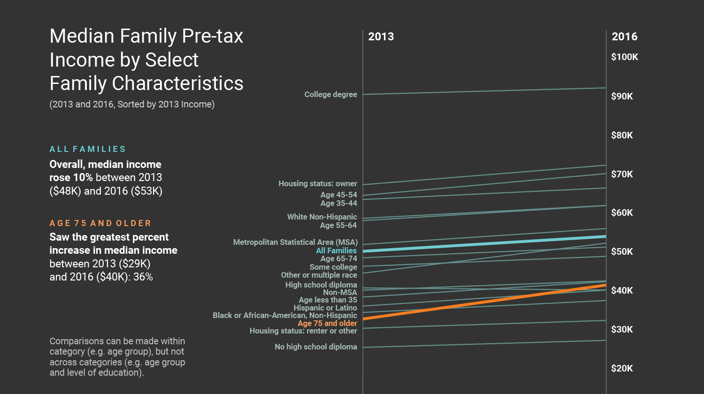
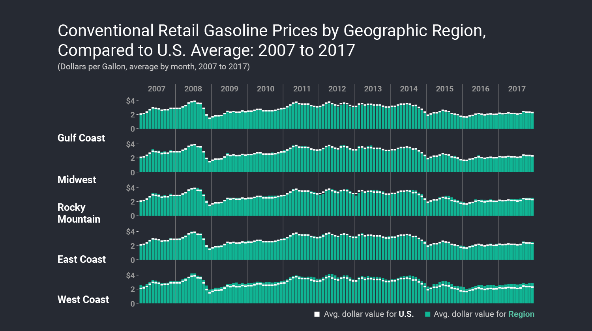
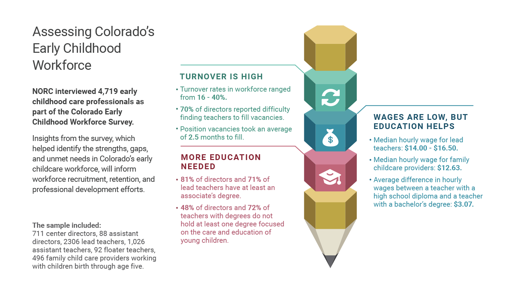
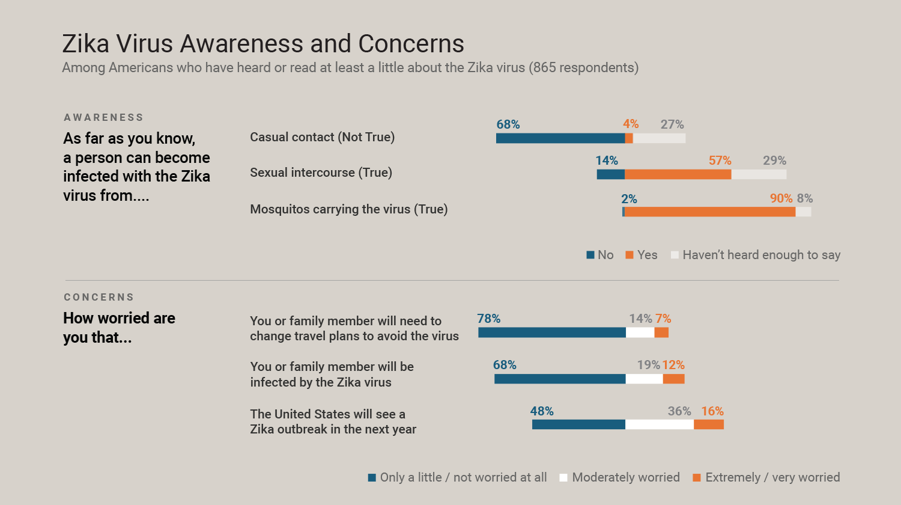
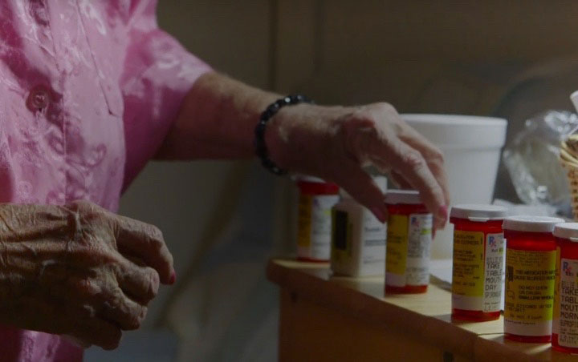
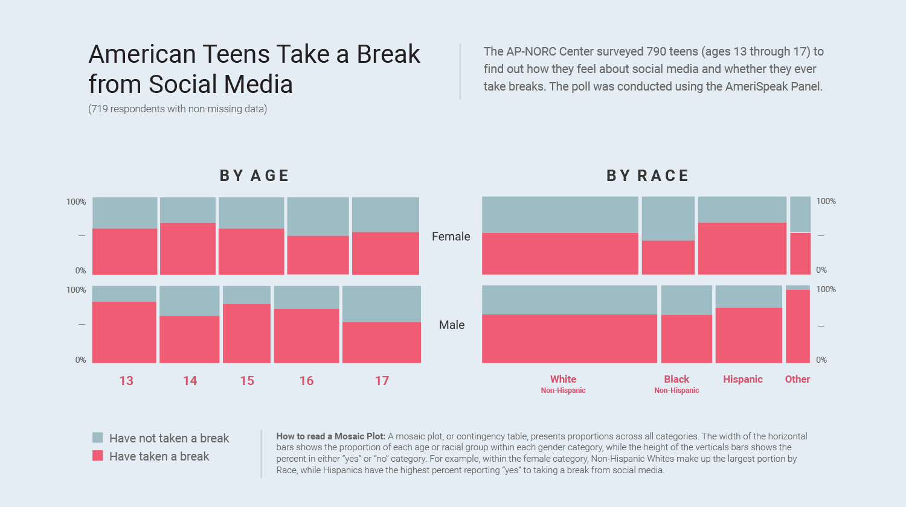

Infographics and Interactive Visualizations
Explore the charts, graphs, and data visualizations in the 2017 annual report.

Median Family Pre-tax Income by Select Family Characteristics

Conventional Retail Gasoline Prices by Geographic Region, Compared to U.S. Average: 2007 to 2017
Many Americans Would Continue Working Even if Rich

Assessing Colorado’s Early Childhood Workforce
What Occupations do STEM Doctorates Pursue
Analysis of Internationally Resident Doctorates
New Bridge Saves Time and Money in Côte d’Ivoire
Cubans Depend on Overseas Family Members
NORC’s Global Portfolio
What do We Know About Medicare Beneficiaries
Drug Overdose Death in Appalachia

Zika Virus Awareness and Concerns

Successful Aging
News Media Sources and Attitudes Vary by Political Party

American Teens Take a Break from Social Media
A Data Toolkit for Measuring Natural Disaster Mortality